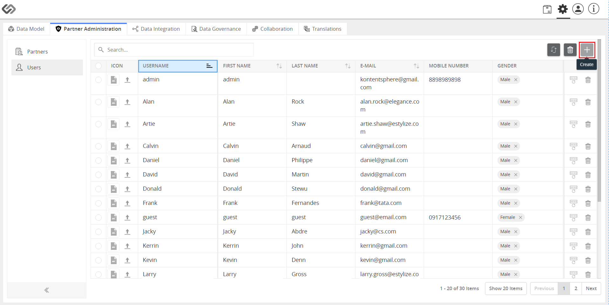

Manage Role Access to Class and Taxonomies¶
This is an administration feature that restricts a user’s access to Class and Taxonomy levels. The feature ensures that the user works directly with the articles they are intended to be responsible for.
| Key Term: |
|
| Description: |
|
| Related topics: | |
| Application: |
|
How-to: Restrict a Role’s Access to Class and Taxonomy¶
To restrict a role’s access to class and taxonomy, follow these steps:
- Log in and click on the Administration button.

Create a user.
- Go to Partner Administration tab.
- Click on Users then click on the “+” icon on the right side of the window.
- Enter the login details.
- Click on the Create button and a user is created.
Create Partners (Organization).
- Click on Partners then click on the “+” icon on the right side of the window.

- Enter the name and click on the Create button.
- View the created organization.
Add roles to the users in the organization.
- Click on the Roles tab
- Click on the “+” icon just below the Roles tab to assign roles.
- Enter the name and select the role type then click on the Create button.

- Select the user to which the role will be assigned.
- Select the target class that you want the user to have access to.
- Select the taxonomy to further categorize the products.
Note: If no class or taxonomy is selected, the user has access to all the classes and taxonomies.
- Log in as the user to view the products assigned to you.